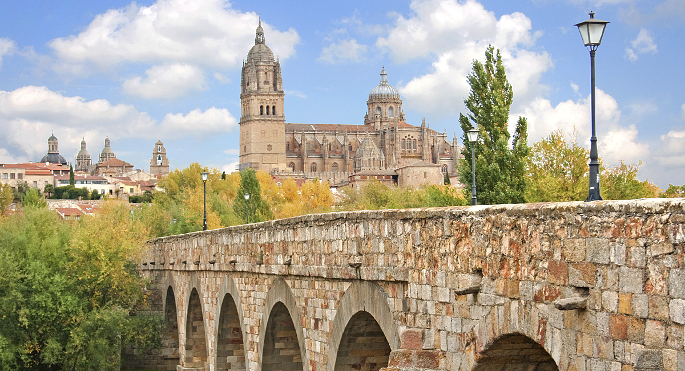

| Provincias | |
|---|---|
| León | |
| Zamora | |
| Ávila | |
| Soria | |
| Segovia | |
| Palencia | |
| Burgos | |
| Valladolid |
Salamanca es un municipio y ciudad española, capital de la provincia homónima, situada en la comunidad autónoma de Castilla y León. Está ubicada en la comarca del Campo de Salamanca, en plena meseta Norte, en el cuadrante noroeste de la península ibérica. Tiene una población de 144 436 habitantes empadronados (INE, 2017). Su área funcional estable alcanza los 203 999 ciudadanos, lo que la convierte en la tercera más poblada de la comunidad, tras la de Valladolid y la de León.
Salamanca alberga la universidad, en activo, más antigua de España, la Universidad de Salamanca, fundada en 1218 por Alfonso IX de León sobre el germen de su estudio general, y que fue la primera de Europa que ostentó el título de universidad por real cédula de Alfonso X el Sabio con fecha de 9 de noviembre de 1252 y por la licentia ubique docendi del papa Alejandro IV de 1255.Durante la época en la que fue una de las universidades más prestigiosas de Occidente se hizo popular la frase «Quod natura non dat, Salmantica non præstat», ‘Lo que la naturaleza no da, Salamanca no presta’.Salamanca está ligada a la historia universal por nombres propios como Antonio de Nebrija, Cristóbal Colón, Fernando de Rojas, Francisco de Vitoria y la Escuela de Salamanca, fray Luis de León, Beatriz Galindo o Miguel de Unamuno
En 1988, la ciudad vieja fue declarada Patrimonio de la Humanidad por la Unesco.Cuenta con un importante patrimonio histórico-arquitectónico, entre el que destacan sus dos catedrales —la Vieja y la Nueva—, la Casa de las Conchas, la plaza Mayor, el convento de San Esteban y las Escuelas Mayores.En 2002, fue nombrada, junto con la ciudad belga de Brujas, Capital Europea de la Cultura por el Consejo de la Unión Europea y el Parlamento Europeo.Desde 2003, su Semana Santa está declarada de interés turístico internacional.En 2005, acogió la celebración de la XV Cumbre Iberoamericanay desde el mismo año celebra anualmente el Festival Internacional de las Artes de Castilla y León.
En Salamanca se encuentran importantes instituciones científicas y centros de investigación, como el Centro de Investigación del Cáncer,el Instituto de Neurociencias de Castilla y León (INCyL),el Centro de Investigación y Desarrollo Tecnológico del Agua (CIDTA) y el Centro de Láseres Pulsados Ultracortos Ultraintensos (CLPU).En la actualidad, la ciudad y su área metropolitana, acogen a algunas de las mayores empresas, por facturación, de la comunidad autónoma de Castilla y León.Además, en la actualidad, está considerada como el gran referente mundial en la enseñanza del español,ya que concentra el 78 % de la oferta existente en su comunidad autónoma, lo que representa el 16 % del mercado nacional

Foto extraida de hosteleriaSalamanca.es
Esta formado por Salamanca,Guijuelo,Bejar,Ciudad Rodrigo,Peñaranda de Bracamonte y Vitigudino
La ciudad de Salamanca se sitúa en la confluencia de dos unidades geológicas y ambientales del suroeste de la meseta castellano-leonesa a orillas del río Tormes. Por un lado, en dirección norte y este, la cuenca sedimentaria terciaria, caracterizada por extensas planicies dedicadas a cultivos de secano; por el otro, la penillanura del zócalo paleozoico hacia el sur y el oeste, donde predomina un ecosistema antropizado de encinares y pastizales conocido como Campo Charro, dedicado en su mayor parte a la ganadería.
El núcleo urbano se levanta sobre una terraza fluvial de areniscas recortada por un meandro del río y varios arroyos que modelaron tres altozanos escarpados que singularizan su silueta histórica: el de las Catedrales, en el centro, el de San Cristóbal, en la zona oriental y el de San Vicente, al oeste.
La población, localizada en un punto estratégico desde el que se controla un vado del río, se integra dentro de un corredor natural que recorre el oeste peninsular de norte a sur: la Vía de la Plata. Esta circunstancia y las posibilidades productivas de las tierras de su entorno, propiciaron la temprana ocupación humana del solar salmantino desde la Prehistoria reciente, influyendo desde su origen en la personalidad urbana de la ciudad y en su evolución histórico-cultural.
El primer hábitat humano en el solar salmantino se ha fechado a comienzos del primer milenio antes de Cristo. Así lo atestiguan los restos cerámicos hallados en el «cerro de San Vicente» y que han sido adscritos a la cultura de Cogotas I del Bronce Final. En este mismo cerro se ha hallado lo que hasta la fecha se considera el primer asentamiento humano de carácter estable y continuo, aunque ya adscrito a la cultura del Soto de Medinilla de la primera Edad del Hierro (siglo vii a. C.). Con posterioridad, ya en la segunda Edad del Hierro (desde el siglo iv a. C.), se ha constatado que se desarrolló un nuevo núcleo de población en el denominado «teso de las catedrales o cerro de San Isidro», este ya de carácter castreño y que perduró hasta la definitiva romanización de la ciudad. Todos estos asentamientos, y por tanto el actual emplazamiento de Salamanca, deben su existencia a las especiales características geomorfológicas del terreno sobre el que se asentaron. Así pues, en la elección de la ubicación de estos sucesivos asentamientos debió tener una especial influencia que esta zona contara con tres tesos —formados por la erosión de los arroyos de San Francisco y Santo Domingo—, sus correspondientes vaguadas y especialmente la proximidad del río Tormes. Estos detalles remiten a la idoneidad de este territorio a las primitivas funciones de defensa y de control del territorio circundante
Con el fin del Imperio Romano Occidental, los alanos se establecen en Lusitania y la ciudad pasa a formar parte de esta región. Posteriormente los visigodos conquistan la ciudad y la anexionan a su territorio. Se tienen pocos datos sobre el desarrollo de Salamanca en la época visigoda, solamente se sabe que en el siglo iv la muralla romana se amplía con torreones sobre el mismo trazado, y que la fábrica de la cerca anterior quedó destruida prácticamente en su totalidad. Se sabe que en 589 la ciudad era sede episcopal pues figura entre las ciudades que enviaban obispos a los concilios de Toledo.
En el año 712, con la invasión musulmana de la península ibérica, Musa ibn Nusair conquista la ciudad. Durante la Alta Edad Media, la zona quedó como «tierra de nadie» y gran parte de sus núcleos de población resultaron destruidos por las frecuentes incursiones (algaradas) de los árabes. Salamanca quedó reducida a un núcleo carente de importancia y casi despoblado, aunque se mantuvo intacto el puente, con algunos pobladores en los alrededores. Los sucesivos intentos de los reinos cristianos de estabilizar la zona originaron no pocos choques con las expediciones musulmanas hacia el norte, que provocaron diversas escaramuzas y batallas, como la de Alfonso I de Asturias en 754, que acabaron por arrasar lo que quedaba de urbano.
Como el resto de núcleos históricos de la Corona que tenían representación en Cortes, Salamanca se unió al movimiento de las Comunidades de Castilla (1520) contra los nuevos impuestos que reclamaba Carlos I en las Cortes y en defensa de sus manufacturas textiles contra los privilegios de los exportadores de lana. Tras la derrota de los Comuneros el rey Carlos I hizo desmochar las torres de los palacios de los salmantinos que se adhirieron a la revuelta.
Durante la guerra de la Independencia, Salamanca fue ocupada por las tropas del mariscal Soult en 1809 y permaneció en manos francesas hasta la batalla de los Arapiles (1812), en la que vencieron los ejércitos aliados bajo el mando de Wellington. Durante la ocupación, los franceses construyeron defensas y, para obtener materiales, destruyeron una importante parte de los edificios salmantinos, especialmente del barrio llamado de Caídos (derruidos), donde se levantaban conocidos colegios mayores de la Universidad, de los que no queda ni rastro. El peor momento llegó cuando Fernando VII cerró las universidades españolas. A partir de la reapertura, la de Salamanca quedó reducida a una universidad de provincias. Por la provincia de Salamanca actuó el guerrillero y militar salmantino Julián Sánchez "el Charro" al mando de la unidad Lanceros de Castilla.
En 1940, Pío XII fundó la Universidad Pontificia de Salamanca como continuación de los antiguos estudios de teología. En 1988 Salamanca fue declarada Ciudad Patrimonio de la Humanidad por la Unesco. En 1998, por acuerdo de los ministros de Cultura de la Unión Europea, Salamanca fue designada junto a Brujas, Capital Europea de la Cultura para el año 2002. La ciudad también aspira a obtener la candidatura a la Exposición Universal de Salamanca en un futuro no muy lejano.
Por su parte, el sector servicios (el boyante turismo cultural y la Universidad) es la principal fuente de ingresos de la ciudad. Es especialmente relevante la actividad educativa durante el verano, ya que cuenta con una gran afluencia de estudiantes procedentes de muchos países, que en su mayoría vienen para aprender el castellano y asistir a diversos cursos de verano. La capital salmantina acogió los días 14 y 15 de octubre de 2005 la celebración de la XV Cumbre Iberoamericana de Jefes de Estado y de Gobierno. El príncipe heredero del Japón Naruhito visitó la ciudad el 13 de junio de 2013 con motivo de la conmemoración de los 400 años de intercambio hispano-japonés. Recibió de manos del alcalde Alfonso Fernández Mañueco las llaves de la ciudad
Foto extraida de hosteleriaSalamanca.es
El centro neurálgico y corazón palpitante de Salamanca es su Plaza Mayor, una enorme plaza cuadrada porticada (aunque en realidad sus 4 lados tienen longitudes diferentes), que recuerda mucho a la Plaza Mayor de Madrid. Y como en aquella, en la de Salamanca no va a faltar ambiente: siempre hay alguien tomándose un vinito en sus terrazas o un helado en la famosa heladería Novelty. Además, cada 31 de diciembre se celebra aquí la Nochevieja de los estudiantes, en la que amigos y compañeros de clase se reúnen para celebrar juntos la llegada del nuevo año.
Si desde allí atraviesas el Arco del Corrillo entrarás en una plaza mucho más pequeña pero con mucho encanto: la Plaza del Corrillo. Si te fijas en las columnas de su lado porticado verás unos relieves que representan a dioses romanos cada uno simbolizando un día de la semana. Pero eso no es todo, cerca del arco hay una inscripción de una frase de Cervantes que reza:
Advierte, hija mía, que estás en Salamanca, que es llamada en todo el mundo madre de las ciencias, archivo de las habilidades, tesorera de los buenos ingenios y que de ordinario cursan en ella y habitan diez ó doce mil estudiantes, gente moza, antojadiza, arrojada, libre, aficionada, gastadora, discreta, diabólica y de humor
En Salamanca hay dos catedrales, la Nueva (la Catedral de la Asunción de la Virgen) y la Vieja y, obviamente, tienes que visitar ambas. La primera es la actual sede de la diócesis de la ciudad y fue construida en un estilo arquitectónico mixto (especialmente barroco y gótico). La Catedral Vieja es de estilos románico y gótico y fue una de las primeras catedrales de la zona (data del siglo XIV).
Y cuando estés frente a la fachada norte de la Catedral Nueva, agudiza bien tu mirada. Si prestas atención podrás ver algún elemento arquitectónico muuuuy peculiar: como el famoso astronauta de Salamanca, un diablo que se está comiendo un helado o un un cangrejo de río (entre otros).
Las sorpresas escultóricas no se acaban aquí: uno de los símbolos de Salamanca (y posiblemente el souvenir más comprado por los turistas) es la calavera con una ranita que se encuentra en la fachada de la Universidad. La tradición cuenta que los estudiantes que la encuentran tendrán suerte con los exámenes. Sin duda es algo curioso que ver en Salamanca, ¿no te parece?
Video extraido del canal de Youtube "EMILIUS WALK."
La provincia de Salamanca ocupa una superficie geográfica de 12 349,06 km², lo que la convierte en la tercera provincia de Castilla y León por extensión después de las de León y Burgos y en la decimosexta de España. Limita con la provincia de Zamora al norte, con la provincia de Valladolid al noreste, con la provincia de Ávila al este, con Extremadura al sur y con Portugal al oeste.
Posee altitud media de 823 m s. n. m. y existen grandes diferencias entre unas zonas y otras. Con 2428 m s. n. m., el punto más alto de la provincia es el pico del Canchal de la Ceja, en la Sierra de Béjar, y con 116 m s. n. m., el punto más bajo es el valle del Salto de Saucelle, en las arribes.
Sus entidades geográficas diferenciadas son la dehesa (que ocupa toda la zona conocida como Campo Charro), la serranía (Sierras de Gata, Francia-Quilamas y Béjar), la llanura cerealista (principalmente en La Armuña, la Tierra de Peñaranda y parte de la Tierra de Alba), el regadío extenso (comarca de Las Villas) y las arribes del Duero, el Tormes, el Uces, el Huebra y el Águeda (en las comarcas de La Ribera y El Abadengo).
La red hidrográfica salmantina está conformada principalmente por la cuenca hidrográfica del Duero. Sus ríos más importantes son el Tormes, el Águeda, el Huebra, el Yeltes y el propio Duero. Los ríos del sudeste pertenecen a la cuenca hidrográfica del Tajo. Entre ellos destaca especialmente el río Alagón, en el que desembocan la mayoría de los ríos de las vertientes septentrionales de la Sierra de Francia-Quilamas y la Sierra de Béjar.
Varios cauces tienen regulado su caudal mediante pantanos, embalses y presas. La de Salamanca, con más de 3400 hm³, es la tercera provincia española con mayor capacidad de embalse de agua, sólo superada por las de Badajoz y Cáceres.Destacan la presa y el embalse de Almendra como la presa más altay uno de los embalses más extensos de España.Ambas forman parte de los Saltos del Duero, un zamorano-salmantino complejo hidroeléctrico muy importante a nivel nacional. Las demás presas y embalses de la provincia son las de Águeda, Aldeadávila, Irueña, Navamuño, Riolobos, San Fernando, Santa Teresa, Saucelle y Villagonzalo de Tormes.
En toda la provincia existen cinco espacios naturales protegidos a nivel regional. Son el parque natural de Arribes del Duero, el parque natural de Las Batuecas - Sierra de Francia, el Espacio natural protegido de El Rebollar, la Sierra de Candelario y la Sierra de las Quilamas. En su totalidad, ocupan una superficie de 210 282 hectáreas.Las Sierras de Francia y Béjar y la Meseta Ibérica han sido declaradas reserva de la biosfera
Video extraido del canal de Youtube "Atrusa Producciones Audiovisuales."
Las Águedas, forman parte de las 10 tradiciones más representativas de Salamanca.Siglo XI, durante la ocupación árabe, las mujeres de Zamarramala distrajeron a los árabes que habían ocupado la ciudad.Sobre todo, para que los hombres recuperaran el Alcázar.Tras ser descubiertas, la mujer que lideró el plan fue castigada cortándole los pechos, aplicándole el martirio de Santa Águeda.Conmemorando ésta valerosa acción, cada 5 de Febrero se otorga simbólicamente el bastón de mando siendo lo más destacable. En todos los ayuntamientos en Castilla y León, a las mujeres de cada localidad.Una jornada de baile charro con trajes tradicionales y de protagonismo absoluto para las mujeres salmantinas.
El origen de esta fiesta popular se remonta al siglo XVI, cuando el rey Felipe II, dicta unas ordenanzas. Las mujeres públicas, que habitaban la Casa de Mancebía, eran trasladadas durante la Cuaresma y Semana Santa, fuera de la ciudad. A partir del Miércoles de Ceniza, las prostitutas eran trasladadas por el Padre Putas a la otra orilla del Tormes.Este personaje recogía de su exilio a las prostitutas, siempre el lunes siguiente al de Pascua (Lunes de Aguas).Éstas para mostrar su alegría por la vuelta a casa, en las barcas agitaban ramas de ahí lo de rameras.Las mujeres vestían faldas picudas de color pardo de donde se cree que deriva la expresión irse de picos pardos.Se conserva la tradición de juntarse con amigos e ir a la ribera del río para degustar el hornazo.Comida típica a base de masa de pan relleno de carne y embutidos.
Uno de los lugares de España donde se vive el Carnaval con más intensidad es Ciudad Rodrigo.También llamado Carnaval del Toro, ya que casi toda la fiesta gira en torno a dicho animal, considerado el más antiguo de España. Declarado de Interés Turístico Nacional. Durante cinco días, su fiesta se centra en una multitud de disfraces, charangas, pasacalles, numerosos encierros y capeas, siendo el toro el protagonista principal de la fiesta.Todo ello acontecido en un escenario tan espectacular como es el casco histórico de Ciudad Rodrigo, rodeado de su muralla, declarado Conjunto Histórico- Artístico.
Declarada Fiesta de Interés Turístico Internacional, la Semana Santa Salmantina.Es uno de los acontecimientos más destacables celebrados desde tiempos inmemoriales. Cuenta con numerosas hermandades y cofradías, algunas de ellas con orígenes en torno al año 1240.Sacan sus pasos en procesión durante el Miércoles, Jueves, Viernes, Sábado y Domingo. Llenando las calles del Casco Histórico de multitud de viandantes, expectantes al paso de las Antiguas Tallas.Todos los años en estas fechas, la ciudad se llena de turistas, que además de poder participar de los actos religiosos, pueden disfrutar de la fiesta en toda su dimensión y apreciar la variada gastronomía que ofrece esta Tierra Charra.
Salamanca es una de las ciudades más bonitas de España. Es Patrimonio de la Humanidad por la UNESCO desde 1988 y destaca por sus monumentos y por su Universidad, la más antigua del país.
La gastronomía de Salamanca es de una gran diversidad, aunque la provincia se haya hecho famosa como exportadora de embutidos y carnes. Dentro de los numerosos productos de renombre destacan el jamón de Guijuelo, la carne de morucha, la lenteja de la Armuña y el vino de las Arribes, de los que puedes leer más información en el apartado de Denominaciones de origen.
El cerdo es un animal muy empleado en la cocina salmantina. El chorizo y el jamón ibérico gozan de una merecida fama en todo el mundo por su sabor, conseguido gracias a la crianza tradicional de los animales, en muchos casos de forma extensiva y a base de bellotas, y de la técnica de elaboración.
También procede del cerdo el farinato, un embutido elaborado con grasa de cerdo, migas de pan, cebolla, aceite de oliva y varios condimentos, entre ellos anís, que se suele comer con huevos fritos. Si bien no es muy conocido fuera de Salamanca, sí que es muy popular en toda la provincia, sobre todo en Ciudad Rodrigo, de donde es originario.
En la vida salmantina está muy presente también el hornazo, que se come principalmente el Lunes de aguas. Es una especie de empanada, de masa más seca, rellena de ingredientes como chorizo, lomo frito, huevo duro, tocino, jamón, etc.Se encuentra durante todo el año en panaderías y pastelerías, por lo que es un alimento muy apropiado para meriendas o excursiones al campo.